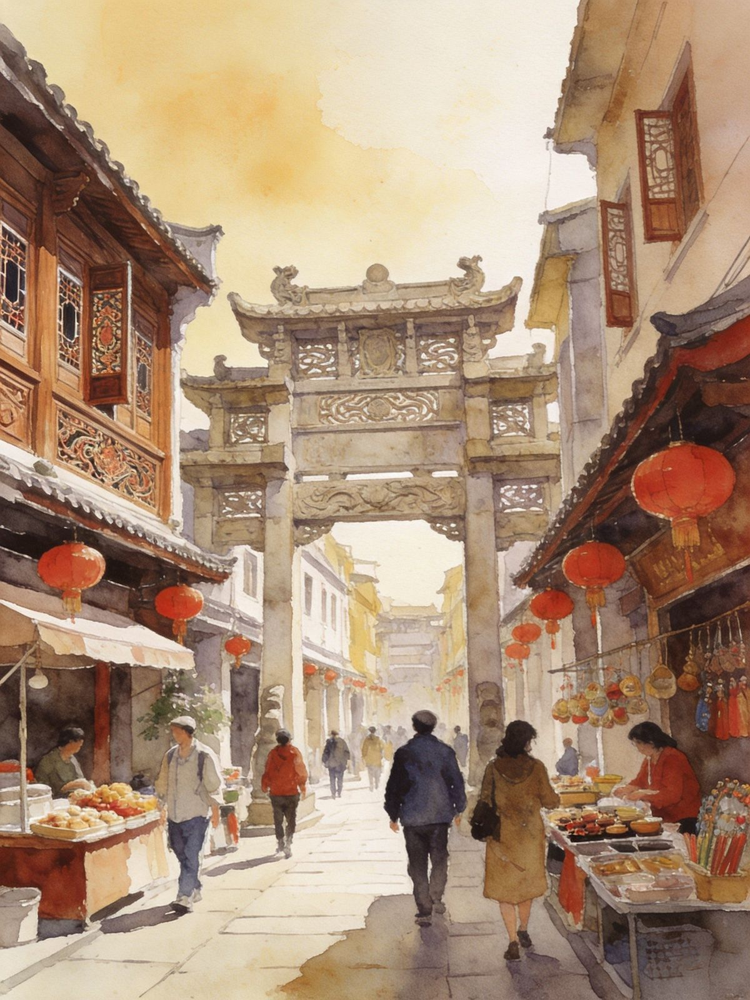
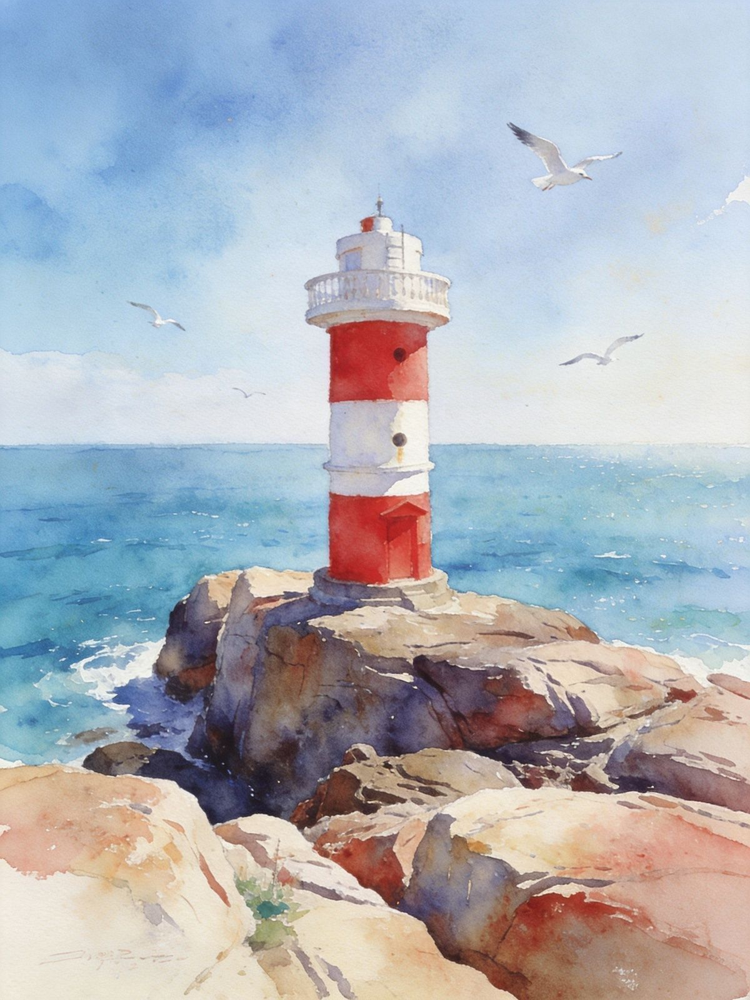

一座古城两千多年，一盅工夫茶千年工夫——潮汕把"潮州古城骑楼 + 汕头南澳海岛"揉成一顿牛肉火锅的气韵。广济桥看亭台、牌坊街逛骑楼、南澳岛守灯塔日落，为了一口潮汕味也值得来。
古城 + 海岛 美食天花板"潮汕"泛指潮州、汕头等粤东地区，文化底蕴极深。**潮州**是座"活着的老城"：广济桥（湘子桥，中国四大古桥之一）、牌坊街、开元寺、古城墙都还在，骑楼与工夫茶是日常；**汕头**是近代开埠城市，小公园骑楼老街区有南洋风情，南澳岛则是天然海岛度假地。
看什么：潮州古城（广济桥/牌坊街/开元寺）；汕头小公园、南澳岛灯塔与沙滩；再加上吃不完的牛肉火锅、粿条、生腌、工夫茶。
适合人群：美食控、老城漫游者、拍人文与海岛的人；两城+海岛可连成 2-4 天深度线。


唐代古刹，潮州古城中心，香火清净。
开埠骑楼老街区，南洋历史风貌，出片。
广济桥夜晚灯光开启，江上倒影很美。
景广济桥看桥 → 牌坊街逛吃 → 开元寺 → 灯火阑珊古城夜景
景汕头小公园骑楼老街 → 牛骨/生腌美食 → 返程
景广济桥 → 牌坊街 → 开元寺 → 古城夜景
景汕头小公园骑楼 → 老城美食 → 前往南澳岛住宿
景南澳岛环岛看灯塔沙滩 → 返程
景广济桥 → 牌坊街 → 开元寺，夜游韩江
景潮州周边（龙湖古寨等）→ 工夫茶体验
景汕头小公园 → 老城美食 → 到南澳岛
景环岛南澳看海 → 返程
高铁：到"潮汕站"（潮州/汕头共用站），出站离潮州约0.5小时、离汕头约1小时，有接驳/公交/打车。
飞机：揭阳潮汕机场，邻近潮汕站，两城均高铁/高速可达。
城际：潮州到汕头车程约1小时，可高铁或打车；南澳岛需经跨海大桥，自驾/大巴上岛。
潮州古城：景点集中，步行+打车即可，广济桥/牌坊街/开元寺都在古城片区。
汕头：小公园老城步行逛，其余打车。
南澳岛：环岛建议自驾/包车或租电动车，景点分散，一天较赶、两天从容。
潮汕灵魂，鲜切牛肉+手打牛肉丸，沙茶酱蘸。
潮汕早餐王，湿炒粿条、牛肉粿条汤。
生腌海鲜、香脆蚝烙；饭后一盅工夫茶解腻。